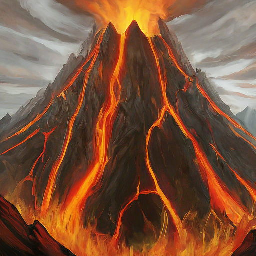

Unforgettable Destinations
-

-
Volcano's Fury
Witness the awe-inspiring power of nature at the heart of the Fire Nation.
-
Serene Shores
Relax and rejuvenate on pristine beaches bathed in golden sunlight.
-
Thriving Cities
Explore bustling metropolises filled with vibrant culture and rich history.
Unleash Your Inner Firebender
Experience the thrill of firebending under the guidance of skilled instructors.
- Learn basic firebending techniques.
- Master the art of controlling flames.
- Participate in friendly firebending competitions.
Immerse Yourself in Fire Nation Culture
Discover ancient traditions, vibrant festivals, and delectable cuisine.
- Witness traditional fire dances.
- Savor the unique flavors of Fire Nation dishes.
- Learn about the rich history and philosophy of the Fire Nation.